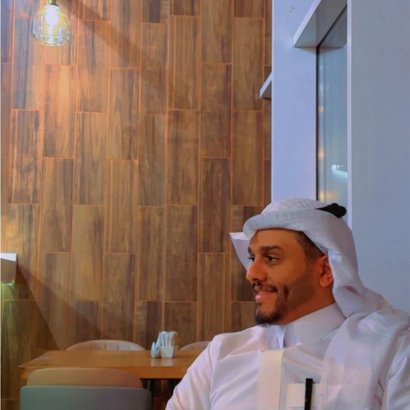

role: Assistant Professor & Department Chair
loc: Computer Engineering, University of Tabuk // AIST Research Center // Saudi Arabia
AI systems engineer turning large neural networks into deployable edge systems. I combine pruning, quantization, tensor decomposition, and knowledge distillation to compress DNNs for microcontrollers, FPGAs, and embedded GPUs. Ph.D. from UC Irvine. 12+ publications. IEEE Best Paper Award winner.
research interests
Building efficient AI systems at the intersection of deep learning theory, compression algorithms, and real hardware deployment.
Deploying DNNs on ARM Cortex-M, RISC-V, Jetson, and FPGAs under strict latency, memory, and power budgets. Building portable inference engines.
Filter pruning, quantization (INT8/binary), tensor decomposition, and knowledge distillation — 10-100x compression with minimal accuracy loss.
RRAM crossbar-based analog accelerators breaking the von Neumann bottleneck. Fault-tolerant architectures for resistive memory devices.
Distribution-free statistical methods providing coverage guarantees for compression hyperparameters — replacing expensive grid search.
32x compression through 1-bit weights. Studying loss landscape geometry and training dynamics to make BNNs practical and reliable.
Equivariant neural networks and structured pruning respecting symmetry. Geometric deep learning for scientific computing.
selected work
12+ peer-reviewed papers spanning edge computing, neural compression, hardware optimization, and brain-computer interfaces.
auto-synced from arxiv
Automatically fetched from arXiv monthly. All papers with my name as author.
{{ paper.abstract }}
research themes
Bridging the gap between large-scale deep learning and real-world edge deployment — making AI smaller, faster, and more reliable.
Designing lightweight inference engines and deployment pipelines that bring deep learning to microcontrollers, embedded systems, and resource-constrained devices.
Structured pruning, quantization, tensor decomposition, and binary neural networks — reducing model size by 10-100x while preserving accuracy for edge deployment.
Understanding how model performance scales in the sub-20M parameter regime where TinyML operates — revealing distinct error dynamics in tiny models.
Co-designing neural architectures with emerging hardware — from in-memory computing accelerators to custom SoCs for energy-efficient AI at the edge.
Applying edge AI and computer vision to real-world industrial challenges — environmental monitoring, smart infrastructure, and energy management systems.
Conformal prediction, uncertainty quantification, and statistical guarantees for ML systems — ensuring trustworthy AI in safety-critical edge applications.
technical stack
get in touch
Open to research collaborations, industry partnerships, and grant proposals in Edge AI, TinyML, and neural network compression.